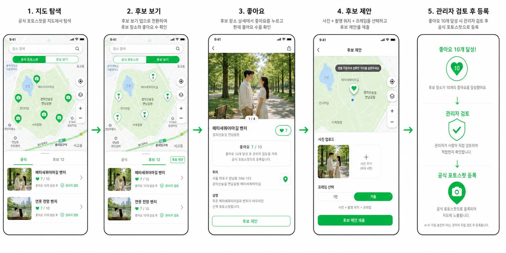

PHOTO NAVIGATION
포토 내비게이션
2주차 개발 진행사항
지도에서 포토스팟을 찾고
원하는 프레임을 선택해 촬영하는 서비스
N030 김병조
●
●
●
01 / 11
01 · 지난주 개발 현황
1주차: 서비스 형태를 실제로 확인 가능한 수준까지 구현
1주차 핵심 결과
기획 문서가 아니라, 사용 흐름을 직접 눌러볼 수 있는 프로토타입을 만들었습니다.
- 포토 내비게이션 서비스 방향 확정
- 핵심 사용자 흐름 및 전체 UI 설계
- React 기반 클릭형 프로토타입 제작
- 네이버 지도 기반 화면 디자인
- 프레임 선택, 촬영 결과 화면 구성
- GitHub Pages 프로토타입 배포
- 4주 백로그와 GitHub 이슈 정리
02 / 11
02 · 이번 주 개발 목표
2주차: 화면을 실제 기능 구조로 연결
GOAL 01React 핵심 화면 구현
GOAL 02네이버 지도 JavaScript API 연결
GOAL 03포토스팟·마커·상세 정보 연결
GOAL 04프레임 선택 후 카메라 촬영 연결
GOAL 05Express API 서버 기본 구조 구성
GOAL 06다음 주 FE → BE → DB 연결 준비
UI 프로토타입→실제 지도 · 카메라 · API 구조
03 / 11
03 · 이번 주 개발 진행 현황
핵심 화면과 지도·카메라 흐름 구현 완료
| 작업 | 상태 |
|---|---|
| React 핵심 화면 | 완료 |
| 네이버 지도 JavaScript API 연결 | 완료 |
| 포토스팟 마커·상세 정보 | 완료 |
| 공식·후보 포토스팟 전환 UI | 완료 |
| 프레임 선택 및 브라우저 카메라 촬영 흐름 | 완료 |
| 검색 후 지도 이동 | 로컬 구현 · 배포 예정 |
| Express API 서버 | 기본 구조 완료 |
| 실제 네이버 지역 검색 API 응답 | 환경변수 설정 후 연결 |
| Supabase DB 연결 | 예정 |
| 구도 일치도 검사 | 설계 확정 · 구현 예정 |
현재 공개 배포본은 프런트 중심 프로토타입이며, 일부 최신 로컬 변경 사항은 다음 배포에 반영됩니다.
04 / 11
04 · 이번 주 완성된 부분
지도에서 촬영 결과까지 하나의 흐름으로 연결
01
지도 탐색공식·후보스팟 탐색
02
포토스팟 선택목록과 마커선택 동기화
03
상세 정보장소·주소·촬영 팁 확인
04
프레임 선택1인·커플구도 선택
05
카메라 오버레이예시 구도를따라 촬영
06
결과 확인촬영 사진확인
포토스팟을 찾는 순간부터 실제 촬영까지, 화면 이동이 끊기지 않도록 구성했습니다.
05 / 11
05 · 주요 화면
포토스팟 탐색부터 촬영까지

포토스팟 탐색, 후보 확인, 좋아요, 후보 제안, 관리자 검토 흐름을 하나의 서비스 경험으로 설계했습니다.현재 구현 범위: 지도 탐색 → 상세 → 프레임 → 촬영 결과
06 / 11
06 · 데이터 구조 및 DB 연결 계획
포토스팟과 촬영 프레임을 분리해 관리
포토스팟장소명, 좌표, 주소, 상태, 좋아요, 대표 이미지
촬영 프레임연결 스팟, 예시 사진, 오버레이 PNG, 촬영 팁, guide_json
사용자 참여후보 제안, 좋아요, 관리자 검토 상태
photo_spots
├─ photo_frames
└─ likes
└─ likes
users
└─ proposals
└─ proposal_images
└─ proposal_images
Supabase Storage
이미지 파일↔Supabase PostgreSQL
관계 · 상태 · 이미지 URL
이미지 파일↔Supabase PostgreSQL
관계 · 상태 · 이미지 URL
07 / 11
07 · 현재 시스템 구조와 보안 원칙
프런트와 비밀값을 분리한 구조
FRONTENDReact + Vite + Naver Maps
↓
BACKENDExpress API
↓
DATANaver Local Search / Supabase
Maps Client ID브라우저에서 사용하되 허용 도메인을 제한
Client SecretExpress 서버 환경변수에만 저장
.env 파일Git ignore, GitHub Pages와 Vite 번들에 포함 금지
apps/web: 지도·상세·프레임·카메라 구현
apps/api: 장소 검색 프록시 기본 구조 구현
Supabase: 다음 연결 대상
08 / 11
08 · 배포된 프로토타입과 시연
현재 확인 가능한 결과물
PUBLIC PROTOTYPE
yf560.github.io/hub/photo-navigation/- 실제 네이버 지도
- 공식·후보 포토스팟 UI
- 스팟 상세 정보
- 프레임 선택
- 카메라 촬영 흐름
- 후보 제안 UI
발표에서는 지도에서 스팟을 선택하고 프레임 선택 후 카메라 화면까지 직접 시연합니다.
9:41● ● ▰
장소 검색
공식 포토스팟후보 보기
●
●
●
야외음악당 잔디광장대구 두류공원 · 공식 포토스팟
2.28 자유광장프레임 3개 · 촬영 팁
09 / 11
09 · 남은 작업
이제 화면을 실제 데이터로 연결
- 현재 위치와 스팟 거리 표시
- Supabase 테이블 생성 및 초기 포토스팟 등록
- Express 조회 API 구현
- 목 데이터를 API 응답으로 교체
- 후보 제안·좋아요 데이터 저장
- 이미지 Storage 업로드
- 예시 가이드와 촬영 가이드의 구도 일치도 비교
완성된 화면과 사용자 흐름
↓
실제 데이터가 흐르는 서비스
10 / 11
10 · 다음 주 목표
다음 주: FE → BE → DB 수직 슬라이스 완성
DATABASESupabase에
포토스팟 등록
포토스팟 등록
BACKENDExpress API
조회
조회
FRONTENDReact에서
요청
요청
MAP지도 마커
표시
표시
UI상세 정보
갱신
갱신
대구 초기 데이터 저장포토스팟 조회 API목 데이터 교체로딩·오류·빈 상태 검증Express 배포 준비
다음 주에는 실제 DB 데이터를 지도에서 조회하는 기능 하나를 끝까지 완성하겠습니다.
11 / 11